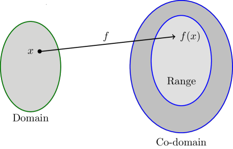

Functions and Limits¶
Function or Mapping¶
- A function is a rule or correspondence, relating two sets in such a way that each element in the first set corresponds to one and only one element in the second set.
- A function \(f\) from a set \(X\) to \(Y\) is a rule or a correspondence assign to each element \(x\) in \(X\) a unique element \(Y\).
- A function can be denoted by:
- \(y=f(x)\)
- \(f:X\to Y\)
- \(f\) is a mapping from \(X\) to \(Y\)
Intervals¶

- Open interval means boundary is not included.
- Close interval means boundary is included.
Domain, Co-domain & Range¶

In a function \(f:X\to Y\):
- \(X\) is called domain
- \(Y\) us called Co-domain
- Only mapped elements of co-domain are called range.
Graph of a function¶
If a vertical line intersects a graph in most one point, it is graph of a function.
Piece-wise function¶
Such functions which are defined by two or more rules are called piece-wise defined functions.
Types of Functions¶
Some important types of functions are discussed here.
Algebraic Function¶
Polynomial Function¶
- The function of the form $$ P(x)=a_nx^n+ a_{n-1}x^{n-1} + a_{n-2}x^{n-2} + ... + a_2x^2 + ax + a_0$$ is called polynomial function of degree \(n\).
- \(a_n \rlap{/}{=}0\), and \(n\) is any non negative integer.
- Domain and range is real number.
Linear Function¶
- If the degree of a polynomial function is \(1\), then it is called linear function.
- The general form a linear function is \(f(x)=\) \(ax+b\), \(a \rlap{/}{=}0\), \(a\) & \(b\) are real numbers.
- Domain and range of linear function is real numbers.
- The graph of a linear function is a straight line.
Identity Function¶
- For any set \(X\), a function \(I:X\to X\) of the form \(I(x)=x\), \(\forall x\in X\) is called identity function.
- Domain and range of \(I\) is \(X\).
Constant Function¶
- Let \(X\) and \(Y\) be sets of real numbers. A function \(C:X\to Y\) defined by \(C(x)=a\), \(\forall x\in X\), \(a\in Y\) is called a constant function.
- Domain is all real numbers.
- Range is \(a\)(any constant).
Rational Function¶
- A function of \(R(x)\) of the form \(\frac{P(x)}{Q(x)}\), where both \(P(x)\) and \(Q(x)\) are polynomial functions and \(Q(x)\rlap{/}{=}0\), is called a rational function.
- The domain of a rational function is set of all real numbers for which \(Q(x)\rlap{/}{=}0\).
- The range set of real numbers.
Trigonometric functions¶
Sine Function¶
- \(y=\sin(x)\)
- Domain \(R\)
- Range \(-1\le y\le 1\)
Cosine Function¶
- \(y=\cos(x)\)
- Domain \(R\)
- Range \(-1\le y\le 1\)
Tangent Function¶
- \(y=\tan(x)\)
- Domain \(\{x:x\in R\land x \rlap{/}{=}(2n+1)\pi/2\}\), \(n\in Z\)
- Range \(R\)
Cotangent Function¶
- \(y=\cot(x)\)
- Domain \(\{x:x\in R\land x\rlap{/}{=}n\pi\}\), \(n \in Z\)
- Range \(R\)
Secant Function¶
- \(y=\sec(x)\)
- Domain \(\{x:x\in R\land x \rlap{/}{=}(2n+1)\pi/2\}\), \(n\in Z\)
- Range \(y\le1\), \(y\le-1\)
Cosecant Function¶
- \(y=\csc(x)\)
- Domain \(\{x:x\in R\land x\rlap{/}{=}n\pi\}\) \(n \in Z\)
- Range \(y\le1\), \(y\le-1\)
Inverse Trigonometric Functions¶
Inverse Sine Functions¶
- \(y=\sin^{-1}x \iff x=\sin y\)
- Domain \(-1\le x\le 1\)
- Range \(-\pi/2\le y\le\pi/2\)
Inverse Cosine Functions¶
- \(y=\cos^{-1}x \iff x=\cos y\)
- Domain \(-1\le x\le 1\)
- Range \(0\le y\le\pi\)
Inverse Tangent Functions¶
- \(y=\tan^{-1}x \iff x=\tan y\)
- Domain \(-\pi/2\le y\le \pi/2\)
- Range \(-\infty\le x\le\infty\)
Exponential Functions¶
- A function in which the variable appears as exponent, is called an exponential function.
- \(y=e^x\), \(y=e^{ax}\), \(y=a^x\) are exponential functions.
- Domain \(R\), Range \(R\)
- Range of \(e^x\) is always non-negative real numbers.
Logarithmic Functions¶
- A function involving \(\log x\) or \(\ln x\) are called logarithmic functions.
- Domain \(R^+\)
- Range \(R\)
Hyperbolic Function¶
Hyperbolic Sine Function¶
- Domain \(R\)
- Range \(R\)
Hyperbolic Cosine Function¶
- Domain \(R\)
- Range \([1, +\infty)\)
Other Hyperbolic Functions¶
Remaining 4 hyperbolic functions are expressed in terms of \(\sinh\) and \(\cosh\) functions and have same properties that resemble tp those of trigonometric functions.
- Tangent Hyperbolic function $$ \tanh x=\frac{\sinh x}{\cosh x} =\frac{e^x - e^{-x} }{e^x + e^{-x}} $$
- Cotangent Hyperbolic function $$ \coth x=\frac{\cosh x}{\sinh x} =\frac{e^x + e^{-x} }{e^x - e^{-x}} $$
- Secant Hyperbolic function $$ \sec h x=\frac{1}{\cosh x} =\frac{2 }{e^x + e^{-x}} $$
- Cosecant Hyperbolic function $$ \csc h x=\frac{1}{\sinh x} =\frac{2 }{e^x - e^{-x}} $$
Inverse Hyperbolic Functions¶
- Sine Inverse Hyperbolic $$ \sinh^{-1} x= \ln \left( x+\sqrt{x^2+1} \right),~\forall x $$
- Cosine Inverse Hyperbolic $$ \cosh^{-1} x= \ln \left( x+\sqrt{x^2-1} \right),~x\ge1 $$
- Tangent Inverse Hyperbolic $$ \tanh^{-1} x= \frac{1}{2}\ln \left( \frac{1+x}{1-x} \right),~|x|<1 $$
- Cotangent Inverse Hyperbolic $$ \coth^{-1} x= \frac{1}{2}\ln \left( \frac{x+1}{x-1} \right),~|x|<1 $$
- Secant Inverse Hyperbolic $$ \sec h^{-1} x= \ln \left( \frac{1}{x}+ \frac{\sqrt{1- x^2}}{x} \right),~0<x\le1 $$
- Cosecant Inverse Hyperbolic $$ \csc h^{-1} x= \ln \left( \frac{1}{x}+\frac{\sqrt{1+x^2}}{|x|} \right),~x{=}\llap{/}0 $$
Some Other Functions¶
Explicit Functions¶
If y is easily expressed in terms of independent variable \(x\), then \(y\) is called an explicit function.
Examples¶
- \(y=\sqrt{2x+1}\)
- \(y=x^2+4x+1\)
Implicit Function¶
If \(y\) cannot expressed in terms of independent variable \(x\), then v is called an implicit function.
Examples¶
- \(xy^2_2xy=0\)
Even & Odd Function¶
- A function \(f(x)\) is said to be odd if \(f(-x)=f(x)\).
- A function \(f(x)\) is said to be odd if \(f(-x)=-f(x)\)
Properties¶
- Constant function is always even
- Even function is symmetric about y-axis
- Odd function is symmetric about origin
- The graph of odd functions occur in 1st and 3rd Quadrant or 2nd and 4th Quadrant
- Sum, difference and quotient if even function are even
- Sum, difference and quotient of odd function are odd
- Product of an even and odd function is odd
Greatest Integer Function¶
The greatest integer function is denoted by \([x]\), pairs with each real number \(x\) the greatest integer function is denoted by \([x]\), pairs with each real number \(x\) the greatest integer not exceeding \(x\).
Examples¶
- \([3,2]=3\)
- \([-0.6543]=-1\)
Absolute Value Function¶
Examples¶
- \(|3|=3\)
- \(|-4.12|=4.12\)
Parametric Function¶
Sometimes the relation between \(x\) and \(y\) can be expressed in terms of third variable, which is called parameter, such type of functions are Parametric functions.
Examples¶
Some Important Identities¶
- \(\cosh^2x-\sinh^2x=1\)
- \(\cosh^2x+\sinh^2x=\cosh 2x\)
- \(\sinh 2x=2\sinh x\cosh x\)
- \(\cosh x-1 = \csc h^2 x\)
- \(1-\tan \text{h} x=\sec \text{h} x\)
Composition of Functions¶
Limits¶
Some Fundamental Theorems on limits¶
- if \(f(x)\le g(g)\) for all \(x\) then \(\lim_{x\to a} f(x)\le \lim_{x\to a} g(x)\).
- \(\lim_{x\to a} f(x)=\ln \lim_{x\to a} f(x)\)
- \(\lim_{x\to a}\left[f(x)^n\right]=\left[\lim_{x\to z} f(x)\right]^n\), where \(n\) is an integer.
- Sandwich Theorem (Aqueeze Principle):
Let \(f\), \(g\) & \(h\) be function such that \(f(x)\le g(x)\le h(x)\) for all values of \(x\). if \(\lim_{x\to a}f(x)=L\) and \(\lim_{x\to a}g(x)=L\) then \(\lim_{x\to a}h(x)=L\)
Limit of a function at infinity¶
- The limit of a function at infinity means the limit as \(x\to +\infty\) (x increasing beyond all bounds). If the limit is \(K\) we write as follows: $$ \lim_{x\to +\infty}f(x)=K $$
- If \(x\to -\infty\) (\(x\) decreases beyond all bounds) and the limit of functions is \(L\). We can write as: $$ \lim_{x\to -\infty} f(x)=L $$
Indeterminate Forms¶
An indeterminate form is an expression of the type:
| \(\infty-\infty\) | \(\frac{0}{0}\) | \(\frac{\infty}{\infty}\) |
| \((\infty)^0\) | \((0)^{\infty}\) | \((0)^0\) |
| \((1)^\infty\) | \(0\times\infty\) | \(\infty\times\infty\) |
One sided Limits¶
The left hand limit¶
\(\lim_{x\to a} f(x)=L\) is read as limit of \(f(x)\) is equal to \(L\), as \(x\) approaches \(a\) from left i.e for all \(x\) sufficient for all \(x\) sufficiently close to \(a\), but less than \(a\).
The right hand limit¶
\(\lim_{x\to a} f(x)=M\) is read as limit of \(f(x)\) is equal to \(M\), as \(x\) approaches \(a\) from left i.e for all \(x\) sufficient for all \(x\) sufficiently close to \(a\), but greater than \(a\).
Existence of Limit of a Function¶
The limit of a function exists if right hand limit = left hand limit